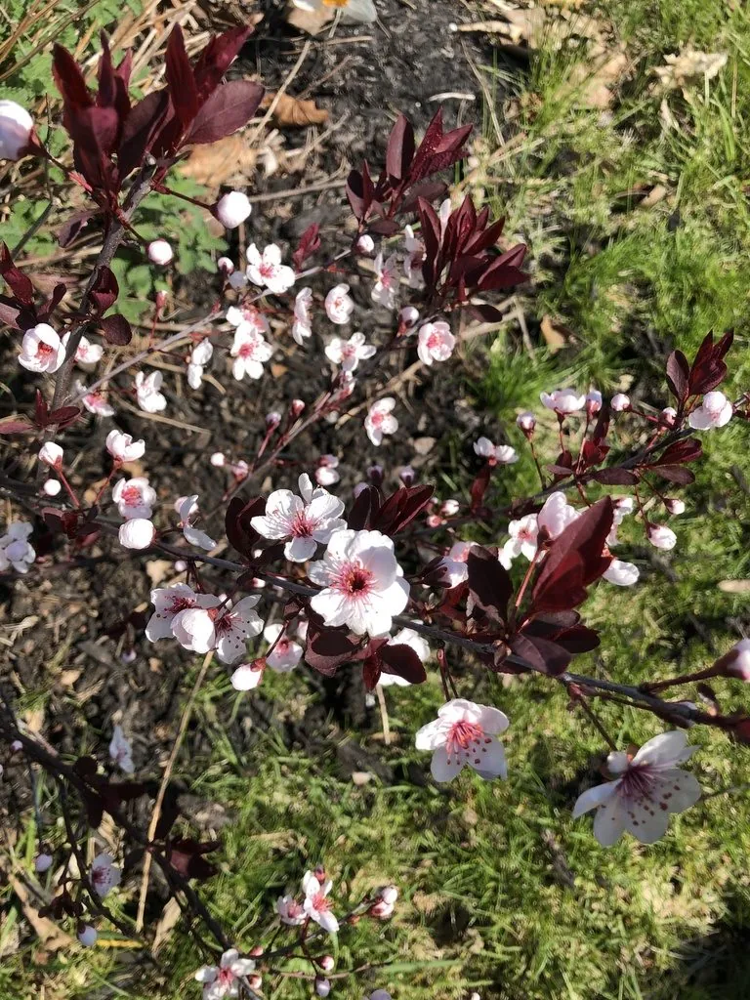

灌木与花木 · 植物界
紫叶矮樱 Prunus × cistena

蔷薇科落叶灌木，叶片紫红色，春季开粉红色花，是园林中常见的彩叶观花灌木，由紫叶李与矮樱杂交而来。
- 分类
- 门被子植物门纲木兰纲目蔷薇目科蔷薇科属李属
- 栖息环境
- 园林草坪边缘、路缘与花境，喜光耐寒
- 地理分布
- 原产北美；中国北方园林广泛栽培
- 保护级别
- 暂无评估；栽培杂交种，未见野生居群
物种志
紫叶矮樱为蔷薇科李属落叶灌木，是紫叶李与矮樱的杂交种，高 1.5–2.5 米，枝条紫红色。叶互生，卵形至椭圆形，全缘，叶面紫红色至暗紫色，背面淡紫色。花单生，粉红色，花瓣 5 枚，花期 4–5 月；果实为核果，球形，成熟时紫红色，果期 7–8 月。
紫叶矮樱原产北美，中国北方园林广泛栽培，喜光，也耐半阴，耐寒、耐旱，适宜疏松肥沃、排水良好的土壤。它叶色紫红、春季开粉红色花，是园林中常见的彩叶观花灌木，常植于草坪边缘、路缘与花境；与紫叶李相比，株形更矮小、叶色更鲜艳。栽培以嫁接和扦插繁殖为主，需注意防治蚜虫与红蜘蛛，光照不足时叶色会变绿。
形态与习性
- 株高1.5–2.5 米，枝条紫红色
- 花期4–5 月，花粉红色
- 果期7–8 月，核果紫红色
- 叶色叶面紫红至暗紫色
- 光照喜光，光照足叶色更艳
- 水分耐旱，忌积水
- 主要用途彩叶观花、路缘与花境绿化
趣味知识
- 紫叶矮樱是紫叶李与矮樱的杂交种，兼具紫叶和矮生特点。
- 它的叶色在整个生长季保持紫红，是常见的彩叶灌木。
- 与紫叶李相比，紫叶矮樱株形更矮、叶色更鲜艳。
- 光照不足时叶片会变绿，栽培应选择阳光充足处。